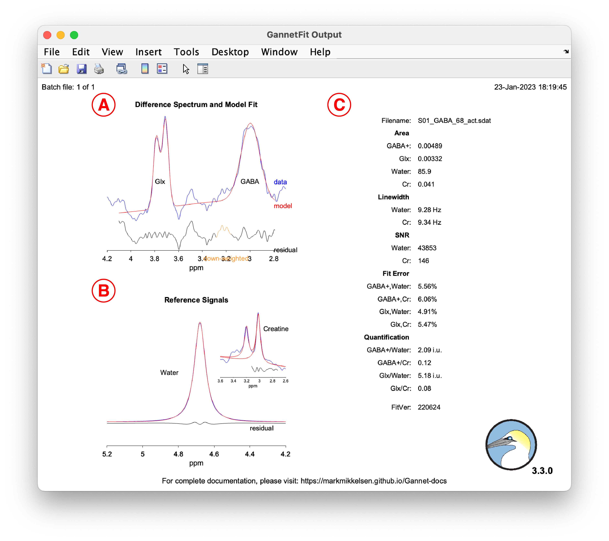

Reference
Last updated: February 23, 2023
The variables listed on this page are applicable to release 3.3.0 and are not necessarily correct for older versions of Gannet.
Pre-initialize Gannet
Parent function
GannetPreInitialise.m
| Acquisition parameters | Description |
|---|---|
target |
Sets the metabolite of interest that was edited in the MRS experiment; if HERMES or HERCULES was used, multiple metabolites should be selected |
seqorig |
Origin of the Philips MEGA-PRESS or GE HERMES sequences |
| Analysis parameters | Description |
|---|---|
LB |
Sets the amount of exponential line-broadening to apply to the data (in Hz) |
water_ECC |
Whether to perform an eddy-current correction1 on the water data |
metab_ECC |
Whether to perform an eddy-current correction on the metabolite data |
water_removal |
Whether to remove the residual water signal from the difference spectra using an HSVD filter2 |
alignment |
Which method to use for shot-to-shot frequency-and-phase correction3–6 |
use_prealign_ref |
In some cases, using RobustSpecReg to
align HERMES/HERCULES data can result in worse alignment compared to the
pre-aligned data; setting this parameter to 1 will make
RobustSpecReg use the averaged pre-aligned subspectra as
references to align the averaged post-aligned subspectra, which may
improve the final alignment; this has not be tested extensively |
fit_resid_water |
Whether to model the residual water signal in the difference spectrum; used to calculate a water suppression factor |
weighted_averaging |
Whether to average the data using weighted averaging;
the default approach use is mean-squared error, but other approaches can
be set in SignalAveraging.m |
| Flags | Description |
|---|---|
HERMES |
Set to 1 if the data were acquired using
HERMES |
HERCULES |
Set to 1 if the data were acquired using
HERCULES (HERMES must also be set to 1) |
PRIAM |
Set to 1 if the data were acquired using
PRIAM |
phantom |
Set to 1 if the data were acquired in a
phantom |
join |
Set to 1 to join multiple files (this can
be batched across subjects) |
mat |
Set to 1 to save the output structure as a
MAT-file |
csv |
Set to 1 to export a CSV file containing
useful data for analysis (applies to GannetFit.m,
GannetSegment.m and GannetQuantify.m) |
append |
Set to 1 to append PDF outputs into one
PDF (separately for each module) (requires export_fig in
the Gannet/ directory to be added to the search path and
Ghostscript
to be installed (NB: macOS users should use
this
version or use
Homebrew
to install Ghostscript) |
hide |
Set to 1 to not display output
figures |
Loading and preprocessing data
Parent function
GannetLoad.m
Example usage:
MRS_struct = GannetLoad({'S01_GABA_68_act.sdat'}, {'S01_GABA_68_ref.sdat'});Output:

Signal fitting
Parent function
GannetFit.m
Example usage:
MRS_struct = GannetLoad({'S01_GABA_68_act.sdat'}, {'S01_GABA_68_ref.sdat'});
MRS_struct = GannetFit(MRS_struct);Output:

Voxel co-registration
Parent function
GannetCoRegister.m
Example usage:
MRS_struct = GannetLoad({'S01_GABA_68_act.sdat'}, {'S01_GABA_68_ref.sdat'});
MRS_struct = GannetFit(MRS_struct);
MRS_struct = GannetCoRegister(MRS_struct, {'S01_struc.nii'});Output:

Tissue segmentation
Parent function
GannetSegment.m
Example usage:
MRS_struct = GannetLoad({'S01_GABA_68_act.sdat'}, {'S01_GABA_68_ref.sdat'});
MRS_struct = GannetFit(MRS_struct);
MRS_struct = GannetCoRegister(MRS_struct, {'S01_struc.nii'});
MRS_struct = GannetSegment(MRS_struct);Output:

Quantification
Parent function
GannetQuantify.m
Example usage:
MRS_struct = GannetLoad({'S01_GABA_68_act.sdat'}, {'S01_GABA_68_ref.sdat'});
MRS_struct = GannetFit(MRS_struct);
MRS_struct = GannetCoRegister(MRS_struct, {'S01_struc.nii'});
MRS_struct = GannetSegment(MRS_struct);
MRS_struct = GannetQuantify(MRS_struct);Output:

References
1.
Klose U. In vivo proton
spectroscopy in presence of eddy currents. Magnetic Resonance
in Medicine. 1990;14(1):26-30. doi:10.1002/mrm.1910140104
2.
Barkhuijsen H, Beer R de, Ormondt D van. Improved algorithm for noniterative time-domain model
fitting to exponentially damped magnetic resonance signals.
Journal of Magnetic Resonance. 1987;73(3):553-557. doi:10.1016/0022-2364(87)90023-0
3.
Evans CJ, Puts NAJ, Robson SE, et al. Subtraction artifacts and frequency (Mis-)alignment in
J-difference GABA editing. Journal of Magnetic Resonance
Imaging. 2013;38(4):970-975. doi:10.1002/jmri.23923
4.
Near
J, Edden R, Evans CJ, Paquin R, Harris A, Jezzard P. Frequency and phase drift correction of magnetic
resonance spectroscopy data by spectral registration in the time
domain. Magnetic Resonance in Medicine.
2015;73(1):44-50. doi:10.1002/mrm.25094
5.
Mikkelsen M, Saleh MG, Near J, et al. Frequency and phase correction for multiplexed edited MRS
of GABA and glutathione. Magnetic Resonance in Medicine.
2018;80(1):21-28. doi:10.1002/mrm.27027
6.
Mikkelsen M, Tapper S, Near J, Mostofsky SH,
Puts NAJ, Edden RAE. Correcting frequency and phase
offsets in MRS data using robust spectral registration. NMR
in Biomedicine. 2020;33(10):e4368. doi:10.1002/nbm.4368
LS0tCnRpdGxlOiAiUmVmZXJlbmNlIgpkYXRlOiAiTGFzdCB1cGRhdGVkOiBgciBmb3JtYXQoU3lzLnRpbWUoKSwgJyVCICVkLCAlWScpYCIKb3V0cHV0OgogIGh0bWxfZG9jdW1lbnQ6CiAgICB0b2M6IFRSVUUKICAgIHRvY19kZXB0aDogMgogICAgdG9jX2Zsb2F0OgogICAgICBjb2xsYXBzZWQ6IEZBTFNFCmJpYmxpb2dyYXBoeTogcmVmZXJlbmNlcy5iaWIKY3NsOiBhbWVyaWNhbi1tZWRpY2FsLWFzc29jaWF0aW9uLmNzbApsaW5rLWNpdGF0aW9uczogeWVzCi0tLQoKYGBge3Igc2V0dXAsIGluY2x1ZGUgPSBGQUxTRX0Ka25pdHI6Om9wdHNfY2h1bmskc2V0KGVjaG8gPSBUUlVFKQpgYGAKCmBgYHtyLCBjaGlsZCA9ICJqcy9iYWNrLXRvLXRvcC5qcyJ9CmBgYAoKPGJyPgoKOjo6IGluZm8KPGkgY2xhc3M9ImZhIGZhLWluZm8tY2lyY2xlIiBzdHlsZT0iY29sb3I6IHdoaXRlIj48L2k+Jm5ic3A7IFRoZSB2YXJpYWJsZXMgbGlzdGVkIG9uIHRoaXMgcGFnZSBhcmUgYXBwbGljYWJsZSB0byByZWxlYXNlIDMuMy4wIGFuZCBhcmUgbm90IG5lY2Vzc2FyaWx5IGNvcnJlY3QgZm9yIG9sZGVyIHZlcnNpb25zIG9mIEdhbm5ldC4KOjo6CgojIyBQcmUtaW5pdGlhbGl6ZSBHYW5uZXQKCjxicj4KCioqUGFyZW50IGZ1bmN0aW9uKioKCmBHYW5uZXRQcmVJbml0aWFsaXNlLm1gCgo8YnI+Cgp8IDx1PkFjcXVpc2l0aW9uIHBhcmFtZXRlcnM8L3U+IHwgPHU+RGVzY3JpcHRpb248L3U+IHwKfDotLS0tLS0tLS0tLS0tLS0tLS18Oi0tLS0tLS0tLS0tLS0tLS0tLS0tLS0tLS0tLS0tLS0tLS0tLS0tLS0tLS0tLS0tLS0tLS18CnwgYHRhcmdldGAgfCBTZXRzIHRoZSBtZXRhYm9saXRlIG9mIGludGVyZXN0IHRoYXQgd2FzIGVkaXRlZCBpbiB0aGUgTVJTIGV4cGVyaW1lbnQ7IGlmIEhFUk1FUyBvciBIRVJDVUxFUyB3YXMgdXNlZCwgbXVsdGlwbGUgbWV0YWJvbGl0ZXMgc2hvdWxkIGJlIHNlbGVjdGVkIHwKfCBgc2Vxb3JpZ2AgfCBPcmlnaW4gb2YgdGhlIFBoaWxpcHMgTUVHQS1QUkVTUyBvciBHRSBIRVJNRVMgc2VxdWVuY2VzIHwKCnwgPHU+QW5hbHlzaXMgcGFyYW1ldGVyczwvdT4gfCA8dT5EZXNjcmlwdGlvbjwvdT4gfAp8Oi0tLS0tLS0tLS0tLS0tLS0tLXw6LS0tLS0tLS0tLS0tLS0tLS0tLS0tLS0tLS0tLS0tLS0tLS0tLS0tLS0tLS0tLS0tLS0tLXwKfCBgTEJgIHwgU2V0cyB0aGUgYW1vdW50IG9mIGV4cG9uZW50aWFsIGxpbmUtYnJvYWRlbmluZyB0byBhcHBseSB0byB0aGUgZGF0YSAoaW4gSHopICAgICAgICAgICAgICAgICAgICAgICAgICAgICAgICAgICAgICAgICAgIHwKfCBgd2F0ZXJfRUNDYCB8IFdoZXRoZXIgdG8gcGVyZm9ybSBhbiBlZGR5LWN1cnJlbnQgY29ycmVjdGlvbiBbQEtsb3NlMTk5MF0gb24gdGhlIHdhdGVyIGRhdGEgICAgICAgICAgICAgICAgICAgICAgICAgICAgICAgICAgICAgICAgICB8CnwgYG1ldGFiX0VDQ2AgfCBXaGV0aGVyIHRvIHBlcmZvcm0gYW4gZWRkeS1jdXJyZW50IGNvcnJlY3Rpb24gb24gdGhlIG1ldGFib2xpdGUgZGF0YSAgICAgICAgICAgICAgICAgICAgICAgICAgICAgICAgICAgICAgICAgICAgICAgICAgfAp8IGB3YXRlcl9yZW1vdmFsYCB8IFdoZXRoZXIgdG8gcmVtb3ZlIHRoZSByZXNpZHVhbCB3YXRlciBzaWduYWwgZnJvbSB0aGUgZGlmZmVyZW5jZSBzcGVjdHJhIHVzaW5nIGFuIEhTVkQgZmlsdGVyIFtAQmFya2h1aWpzZW4xOTg3XSAgICAgICB8CnwgYGFsaWdubWVudGAgfCBXaGljaCBtZXRob2QgdG8gdXNlIGZvciBzaG90LXRvLXNob3QgZnJlcXVlbmN5LWFuZC1waGFzZSBjb3JyZWN0aW9uIFtARXZhbnMyMDEzOyBATmVhcjIwMTU7IEBNaWtrZWxzZW4yMDE4OyBATWlra2Vsc2VuMjAyMF0gfAp8IGB1c2VfcHJlYWxpZ25fcmVmYCB8IEluIHNvbWUgY2FzZXMsIHVzaW5nIGBSb2J1c3RTcGVjUmVnYCB0byBhbGlnbiBIRVJNRVMvSEVSQ1VMRVMgZGF0YSBjYW4gcmVzdWx0IGluIHdvcnNlIGFsaWdubWVudCBjb21wYXJlZCB0byB0aGUgcHJlLWFsaWduZWQgZGF0YTsgc2V0dGluZyB0aGlzIHBhcmFtZXRlciB0byAxIHdpbGwgbWFrZSBgUm9idXN0U3BlY1JlZ2AgdXNlIHRoZSBhdmVyYWdlZCBwcmUtYWxpZ25lZCBzdWJzcGVjdHJhIGFzIHJlZmVyZW5jZXMgdG8gYWxpZ24gdGhlIGF2ZXJhZ2VkIHBvc3QtYWxpZ25lZCBzdWJzcGVjdHJhLCB3aGljaCBtYXkgaW1wcm92ZSB0aGUgZmluYWwgYWxpZ25tZW50OyB0aGlzIGhhcyBub3QgYmUgdGVzdGVkIGV4dGVuc2l2ZWx5IHwKfCBgZml0X3Jlc2lkX3dhdGVyYCB8IFdoZXRoZXIgdG8gbW9kZWwgdGhlIHJlc2lkdWFsIHdhdGVyIHNpZ25hbCBpbiB0aGUgZGlmZmVyZW5jZSBzcGVjdHJ1bTsgdXNlZCB0byBjYWxjdWxhdGUgYSB3YXRlciBzdXBwcmVzc2lvbiBmYWN0b3IgfAp8IGB3ZWlnaHRlZF9hdmVyYWdpbmdgIHwgV2hldGhlciB0byBhdmVyYWdlIHRoZSBkYXRhIHVzaW5nIHdlaWdodGVkIGF2ZXJhZ2luZzsgdGhlIGRlZmF1bHQgYXBwcm9hY2ggdXNlIGlzIG1lYW4tc3F1YXJlZCBlcnJvciwgYnV0IG90aGVyIGFwcHJvYWNoZXMgY2FuIGJlIHNldCBpbiBgU2lnbmFsQXZlcmFnaW5nLm1gIHwKCnwgPHU+RmxhZ3M8L3U+IHwgPHU+RGVzY3JpcHRpb248L3U+IHwKfDotLS0tLS0tLS0tLS0tLS0tLS18Oi0tLS0tLS0tLS0tLS0tLS0tLS0tLS0tLS0tLS0tLS0tLS0tLS0tLS0tLS0tLS0tLS0tLS18CnwgYEhFUk1FU2AgICB8IFNldCB0byBgMWAgaWYgdGhlIGRhdGEgd2VyZSBhY3F1aXJlZCB1c2luZyBIRVJNRVMgICAgICAgICAgICAgICAgICAgICAgICAgICAgICAgICAgICAgICAgICAgICAgICAgICAgICAgICAgICAgICAgICAgICAgICAgICAgICAgICAgICAgICAgIHwKfCBgSEVSQ1VMRVNgIHwgU2V0IHRvIGAxYCBpZiB0aGUgZGF0YSB3ZXJlIGFjcXVpcmVkIHVzaW5nIEhFUkNVTEVTIChgSEVSTUVTYCBtdXN0IGFsc28gYmUgc2V0IHRvIGAxYCkgICAgICAgICAgICAgICAgICAgICAgICAgICAgICAgICAgICAgICAgICAgICAgICAgICAgfAp8IGBQUklBTWAgICAgfCBTZXQgdG8gYDFgIGlmIHRoZSBkYXRhIHdlcmUgYWNxdWlyZWQgdXNpbmcgUFJJQU0gICAgICAgICAgICAgICAgICAgICAgICAgICAgICAgICAgICAgICAgICAgICAgICAgICAgICAgICAgICAgICAgICAgICAgICAgICAgICAgICAgICAgICAgICB8CnwgYHBoYW50b21gICB8IFNldCB0byBgMWAgaWYgdGhlIGRhdGEgd2VyZSBhY3F1aXJlZCBpbiBhIHBoYW50b20gICAgICAgICAgICAgICAgICAgICAgICAgICAgICAgICAgICAgICAgICAgICAgICAgICAgICAgICAgICAgICAgICAgICAgICAgICAgICAgICAgICAgICAgIHwKfCBgam9pbmAgICAgIHwgU2V0IHRvIGAxYCB0byBqb2luIG11bHRpcGxlIGZpbGVzICh0aGlzIGNhbiBiZSBiYXRjaGVkIGFjcm9zcyBzdWJqZWN0cykgICAgICAgICAgICAgICAgICAgICAgICAgICAgICAgICAgICAgICAgICAgICAgICAgICAgICAgICAgICAgICAgICAgfAp8IGBtYXRgICAgICAgfCBTZXQgdG8gYDFgIHRvIHNhdmUgdGhlIG91dHB1dCBzdHJ1Y3R1cmUgYXMgYSBNQVQtZmlsZSAgICAgICAgICAgICAgICAgICAgICAgICAgICAgICAgICAgICAgICAgICAgICAgICAgICAgICAgICAgICAgICAgICAgICAgICAgICAgICAgICAgICB8CnwgYGNzdmAgICAgICB8IFNldCB0byBgMWAgdG8gZXhwb3J0IGEgQ1NWIGZpbGUgY29udGFpbmluZyB1c2VmdWwgZGF0YSBmb3IgYW5hbHlzaXMgKGFwcGxpZXMgdG8gYEdhbm5ldEZpdC5tYCwgYEdhbm5ldFNlZ21lbnQubWAgYW5kIGBHYW5uZXRRdWFudGlmeS5tYCkgfAp8IGBhcHBlbmRgICAgfCBTZXQgdG8gYDFgIHRvIGFwcGVuZCBQREYgb3V0cHV0cyBpbnRvIG9uZSBQREYgKHNlcGFyYXRlbHkgZm9yIGVhY2ggbW9kdWxlKSAocmVxdWlyZXMgYGV4cG9ydF9maWdgIGluIHRoZSBgR2FubmV0L2AgZGlyZWN0b3J5IHRvIGJlIGFkZGVkIHRvIHRoZSBzZWFyY2ggcGF0aCBhbmQgPGEgaHJlZj0iaHR0cHM6Ly93d3cuZ2hvc3RzY3JpcHQuY29tLyIgdGFyZ2V0PSJfYmxhbmsiPkdob3N0c2NyaXB0PC9hPiB0byBiZSBpbnN0YWxsZWQgKE5COiBtYWNPUyB1c2VycyBzaG91bGQgdXNlIDxhIGhyZWY9Imh0dHBzOi8vcGFnZXMudW9yZWdvbi5lZHUva29jaC8iIHRhcmdldD0iX2JsYW5rIj50aGlzIHZlcnNpb248L2E+IG9yIHVzZSA8YSBocmVmPSJodHRwczovL2Zvcm11bGFlLmJyZXcuc2gvZm9ybXVsYS9naG9zdHNjcmlwdCIgdGFyZ2V0PSJfYmxhbmsiPkhvbWVicmV3PC9hPiB0byBpbnN0YWxsIEdob3N0c2NyaXB0KSB8CnwgYGhpZGVgICAgICB8IFNldCB0byBgMWAgdG8gbm90IGRpc3BsYXkgb3V0cHV0IGZpZ3VyZXMgfAoKLS0tLS0tLS0tLS0tLS0tLS0tLS0tLS0tLS0tLS0tLS0tLS0tLS0tLS0tLS0tLS0tLS0tLS0tLS0tLS0tLS0tLS0tLS0tLS0tCgojIyBMb2FkaW5nIGFuZCBwcmVwcm9jZXNzaW5nIGRhdGEKCjxicj4KCioqUGFyZW50IGZ1bmN0aW9uKioKCmBHYW5uZXRMb2FkLm1gCgo8YnI+CgoqKkV4YW1wbGUgdXNhZ2U6KioKCmBgYHtvY3RhdmUsIGV2YWwgPSBGQUxTRX0KTVJTX3N0cnVjdCA9IEdhbm5ldExvYWQoeydTMDFfR0FCQV82OF9hY3Quc2RhdCd9LCB7J1MwMV9HQUJBXzY4X3JlZi5zZGF0J30pOwpgYGAKCk91dHB1dDoKCjxpbWcgc3JjPSJpbWFnZXMvcmVmZXJlbmNlL0dhbm5ldExvYWQtZXhhbXBsZS5wbmciIGFsdD0iQSBzY3JlZW5zaG90IGV4YW1wbGUgb2YgR2FubmV0TG9hZCBvdXRwdXQiPgoKLS0tLS0tLS0tLS0tLS0tLS0tLS0tLS0tLS0tLS0tLS0tLS0tLS0tLS0tLS0tLS0tLS0tLS0tLS0tLS0tLS0tLS0tLS0tLS0tCgojIyBTaWduYWwgZml0dGluZwoKPGJyPgoKKipQYXJlbnQgZnVuY3Rpb24qKgoKYEdhbm5ldEZpdC5tYAoKPGJyPgoKKipFeGFtcGxlIHVzYWdlOioqCgpgYGB7b2N0YXZlLCBldmFsID0gRkFMU0V9Ck1SU19zdHJ1Y3QgPSBHYW5uZXRMb2FkKHsnUzAxX0dBQkFfNjhfYWN0LnNkYXQnfSwgeydTMDFfR0FCQV82OF9yZWYuc2RhdCd9KTsKTVJTX3N0cnVjdCA9IEdhbm5ldEZpdChNUlNfc3RydWN0KTsKYGBgCgpPdXRwdXQ6Cgo8aW1nIHNyYz0iaW1hZ2VzL3JlZmVyZW5jZS9HYW5uZXRGaXQtZXhhbXBsZS5wbmciIGFsdD0iQSBzY3JlZW5zaG90IGV4YW1wbGUgb2YgR2FubmV0Rml0IG91dHB1dCI+CgotLS0tLS0tLS0tLS0tLS0tLS0tLS0tLS0tLS0tLS0tLS0tLS0tLS0tLS0tLS0tLS0tLS0tLS0tLS0tLS0tLS0tLS0tLS0tLS0KCiMjIFZveGVsIGNvLXJlZ2lzdHJhdGlvbgoKPGJyPgoKKipQYXJlbnQgZnVuY3Rpb24qKgoKYEdhbm5ldENvUmVnaXN0ZXIubWAKCjxicj4KCioqRXhhbXBsZSB1c2FnZToqKgoKYGBge29jdGF2ZSwgZXZhbCA9IEZBTFNFfQpNUlNfc3RydWN0ID0gR2FubmV0TG9hZCh7J1MwMV9HQUJBXzY4X2FjdC5zZGF0J30sIHsnUzAxX0dBQkFfNjhfcmVmLnNkYXQnfSk7Ck1SU19zdHJ1Y3QgPSBHYW5uZXRGaXQoTVJTX3N0cnVjdCk7Ck1SU19zdHJ1Y3QgPSBHYW5uZXRDb1JlZ2lzdGVyKE1SU19zdHJ1Y3QsIHsnUzAxX3N0cnVjLm5paSd9KTsKYGBgCgpPdXRwdXQ6Cgo8aW1nIHNyYz0iaW1hZ2VzL3JlZmVyZW5jZS9HYW5uZXRDb1JlZ2lzdGVyLWV4YW1wbGUucG5nIiBhbHQ9IkEgc2NyZWVuc2hvdCBleGFtcGxlIG9mIEdhbm5ldENvUmVnaXN0ZXIgb3V0cHV0Ij4KCi0tLS0tLS0tLS0tLS0tLS0tLS0tLS0tLS0tLS0tLS0tLS0tLS0tLS0tLS0tLS0tLS0tLS0tLS0tLS0tLS0tLS0tLS0tLS0tLQoKIyMgVGlzc3VlIHNlZ21lbnRhdGlvbgoKPGJyPgoKKipQYXJlbnQgZnVuY3Rpb24qKgoKYEdhbm5ldFNlZ21lbnQubWAKCjxicj4KCioqRXhhbXBsZSB1c2FnZToqKgoKYGBge29jdGF2ZSwgZXZhbCA9IEZBTFNFfQpNUlNfc3RydWN0ID0gR2FubmV0TG9hZCh7J1MwMV9HQUJBXzY4X2FjdC5zZGF0J30sIHsnUzAxX0dBQkFfNjhfcmVmLnNkYXQnfSk7Ck1SU19zdHJ1Y3QgPSBHYW5uZXRGaXQoTVJTX3N0cnVjdCk7Ck1SU19zdHJ1Y3QgPSBHYW5uZXRDb1JlZ2lzdGVyKE1SU19zdHJ1Y3QsIHsnUzAxX3N0cnVjLm5paSd9KTsKTVJTX3N0cnVjdCA9IEdhbm5ldFNlZ21lbnQoTVJTX3N0cnVjdCk7CmBgYAoKT3V0cHV0OgoKPGltZyBzcmM9ImltYWdlcy9yZWZlcmVuY2UvR2FubmV0U2VnbWVudC1leGFtcGxlLnBuZyIgYWx0PSJBIHNjcmVlbnNob3QgZXhhbXBsZSBvZiBHYW5uZXRTZWdtZW50IG91dHB1dCI+CgotLS0tLS0tLS0tLS0tLS0tLS0tLS0tLS0tLS0tLS0tLS0tLS0tLS0tLS0tLS0tLS0tLS0tLS0tLS0tLS0tLS0tLS0tLS0tLS0KCiMjIFF1YW50aWZpY2F0aW9uCgo8YnI+CgoqKlBhcmVudCBmdW5jdGlvbioqCgpgR2FubmV0UXVhbnRpZnkubWAKCjxicj4KCioqRXhhbXBsZSB1c2FnZToqKgoKYGBge29jdGF2ZSwgZXZhbCA9IEZBTFNFfQpNUlNfc3RydWN0ID0gR2FubmV0TG9hZCh7J1MwMV9HQUJBXzY4X2FjdC5zZGF0J30sIHsnUzAxX0dBQkFfNjhfcmVmLnNkYXQnfSk7Ck1SU19zdHJ1Y3QgPSBHYW5uZXRGaXQoTVJTX3N0cnVjdCk7Ck1SU19zdHJ1Y3QgPSBHYW5uZXRDb1JlZ2lzdGVyKE1SU19zdHJ1Y3QsIHsnUzAxX3N0cnVjLm5paSd9KTsKTVJTX3N0cnVjdCA9IEdhbm5ldFNlZ21lbnQoTVJTX3N0cnVjdCk7Ck1SU19zdHJ1Y3QgPSBHYW5uZXRRdWFudGlmeShNUlNfc3RydWN0KTsKYGBgCgpPdXRwdXQ6Cgo8aW1nIHNyYz0iaW1hZ2VzL3JlZmVyZW5jZS9HYW5uZXRRdWFudGlmeS1leGFtcGxlLnBuZyIgYWx0PSJBIHNjcmVlbnNob3QgZXhhbXBsZSBvZiBHYW5uZXRRdWFudGlmeSBvdXRwdXQiPgoKIyMjIFJlZmVyZW5jZXMKCgoK
Built with R Markdown in RStudio.
Copyright © 2020-2023, Mark Mikkelsen